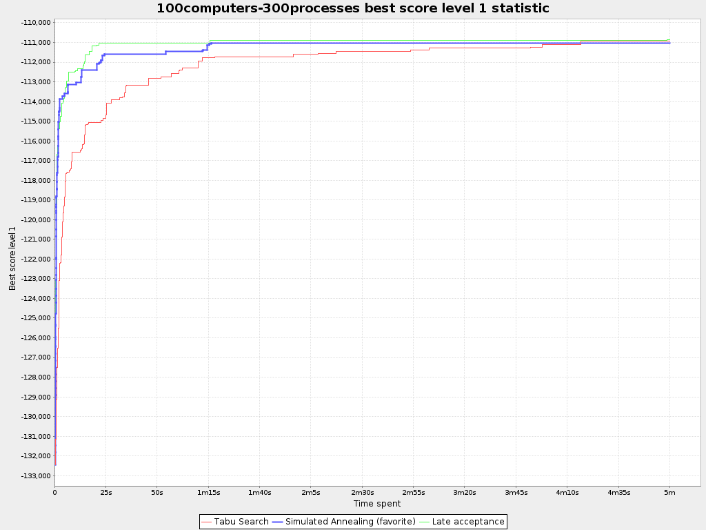
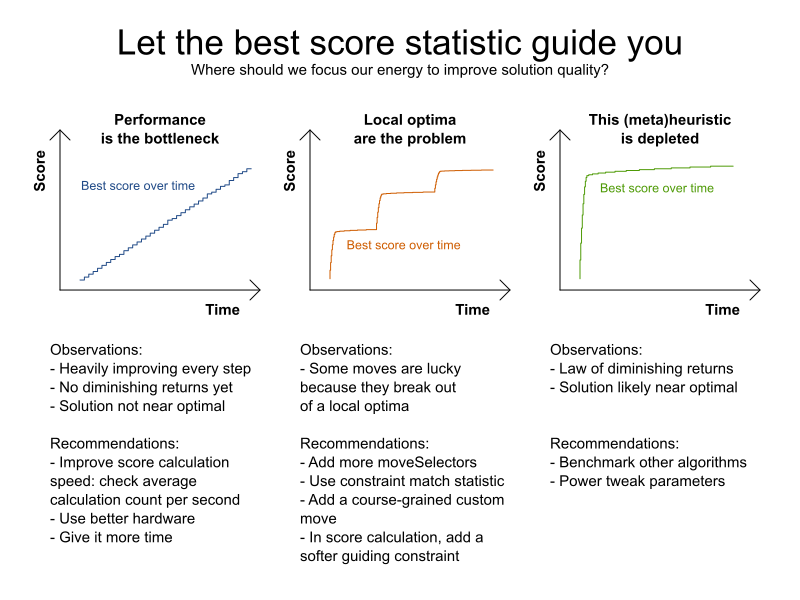

What is the bottleneck in my Solver?
Once we have a vanilla setup of an OptaPlanner project,
where should we invest our time to improve it?
How can I get a better solution faster?
What’s preventing my solver to scale better?
How can I track down my bottleneck?
The scapegoat: machine performance
“We need faster hardware.” It is the typical knee-jerk reaction to any performance problem.
However, for most optimization problems, throwing hardware at the problem doesn’t help much
(in part because of the size of the search space).
For example, presume that the score of the best solution evolves like this over time:

At any point in time (X axis), it shows the score of the best solution (Y axis) found until then.
Notice that if our hardware is twice as fast (so if we need only half the amount of time),
we’d get the score we’re currently getting at 2 mins 30 secs, which is about the same as the score we’re getting after 5 minutes.
So throwing hardware at the problem would hardly improve the solution.
In this case, performance isn’t the bottleneck.
Measure, don’t guess
Instead of wildly guessing at the problem, it’s better to configure the Solver in
the OptaPlanner Benchmarker
and let it generate a useful benchmark report.
In that report, look at the best score over time graph (similar to the one shown above)
and check if you can see any of these 3 patterns on it:

If performance is the bottleneck (left pattern), check your benchmark report for the average calculation count per second.
It’s probably too low, maybe due to a bottleneck in just one of your score constraints.
Using faster hardware well help in this case (although improving score calculation speed is usually better).If local optima are the problem (middle pattern), try adding coarse-grained moves
(but don’t remove the fine-grained moves).If the optimization algorithm is the problem (right pattern), try different optimization algorithms in the solver configuration.
A JVM profiler (such as JProfiler or VisualVM) can be very helpful in the first case, but not in the other 2 cases.
Conclusion
When facing a performance or scalability challenge, don’t randomly improve parts of your code.
Remember that premature optimization is the root of all evil.
Instead, let the OptaPlanner Benchmarker guide you
and fix the biggest bottlenecks first.